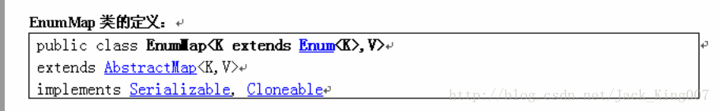
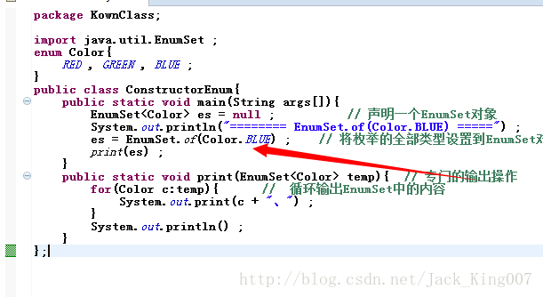
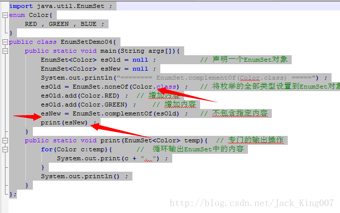

java15高新特性之枚举（1）
1.掌握枚举的作用
在jdk1.5之前 java可以有2钟方式定义新类型：类和接口对于大部分面向对象编程来说，这两种方法看起来似乎足够了
但是一些特殊的情况下 这些方法就不适合 ，其他任何值都是非法的如果有枚举就能很简单的实现了
所谓的枚举就是规定好指定的取值范围 所有内容只能从指定的范围中取得使用简单类完成颜色的固定取值问题
也就是说此事 一个类只能产生固定的几个对象
定义一个枚举
[public]enum 枚举类型名称{
枚举对象1,枚举对象
}
2.可以使用enum关键字定义一个枚举类
public enum Color{RED,GREEN,BLUE ; // 定义三个枚举的类型};
3.enumMap的用法

例子如下
package KownClass;
import java.util.EnumMap ;
import java.util.Map ;
enum Color{
RED , GREEN , BLUE ;
}
public class ConstructorEnum{
public static void main(String args[]){
Map<Color,String> desc = null ; // 定义Map对象，同时指定类型
desc = new EnumMap<Color,String>(Color.class) ; // 实例化EnumMap对象
desc.put(Color.RED,"红色") ;
desc.put(Color.GREEN,"绿色") ;
desc.put(Color.BLUE,"蓝色") ;
System.out.println("====== 输出全部的内容 ======") ;
for(Color c:Color.values()){
System.out.println(c.name() + " --> " + desc.get(c)) ;
}
System.out.println("====== 输出全部的键值 ======") ;
for(Color c:desc.keySet()){
System.out.print(c.name() + "、") ;
}
System.out.println() ;
System.out.println("====== 输出全部的内容 ======") ;
for(String s:desc.values()){
System.out.print(s + "、") ;
}
}
};4.EnumSetEnumSet是Set接口的子类 所以里面的内容是无法重复的在使用EnumSet的时候是不能使用关键字new为其实例化的所以在此提供很多静态方法
实例一 将所有集合设置进去
package KownClass;
import java.util.EnumSet ;
enum Color{
RED , GREEN , BLUE ;
}
public class ConstructorEnum{
public static void main(String args[]){
EnumSet<Color> es = null ; // 声明一个EnumSet对象
System.out.println("======== EnumSet.allOf(Color.class) =====") ;
es = EnumSet.allOf(Color.class) ; // 将枚举的全部类型设置到EnumSet对象之中
print(es) ;
}
public static void print(EnumSet<Color> temp){ // 专门的输出操作
for(Color c:temp){ // 循环输出EnumSet中的内容
System.out.print(c + "、") ;
}
System.out.println() ;
}
};示例二：只设置一个内容
区别在于

实例三：创建只能放入指定内型的的集合
package KownClass;
import java.util.EnumSet ;
enum Color{
RED , GREEN , BLUE ;
}
public class EnumSetDemo03{
public static void main(String args[]){
EnumSet<Color> es = null ; // 声明一个EnumSet对象
System.out.println("======== EnumSet.noneOf(Color.class) =====") ;
es = EnumSet.noneOf(Color.class) ; // 将枚举的全部类型设置到EnumSet对象之中
es.add(Color.RED) ; // 增加内容
es.add(Color.GREEN) ; // 增加内容
print(es) ;
}
public static void print(EnumSet<Color> temp){ // 专门的输出操作
for(Color c:temp){ // 循环输出EnumSet中的内容
System.out.print(c + "、") ;
}
System.out.println() ;
}
};实例四：创建不包含指定的元素集合

5.用枚举实现一个接口
必须实现其中的抽象方法
package KownClass;
interface Print{
public String getColor() ;
}
enum Color implements Print{
RED{
public String getColor(){
return "红色" ;
}
},GREEN{
public String getColor(){
return "绿色" ;
}
},BLUE{
public String getColor(){
return "蓝色" ;
}
} ;
}
public class InterfaceEnumDemo{
public static void main(String args[]){
for(Color c:Color.values()){
System.out.print(c.getColor() + "、") ;
}
}
};